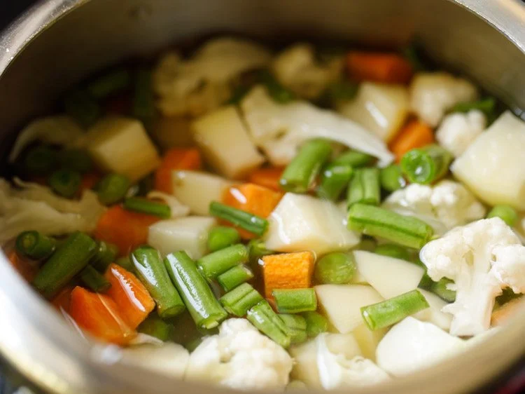
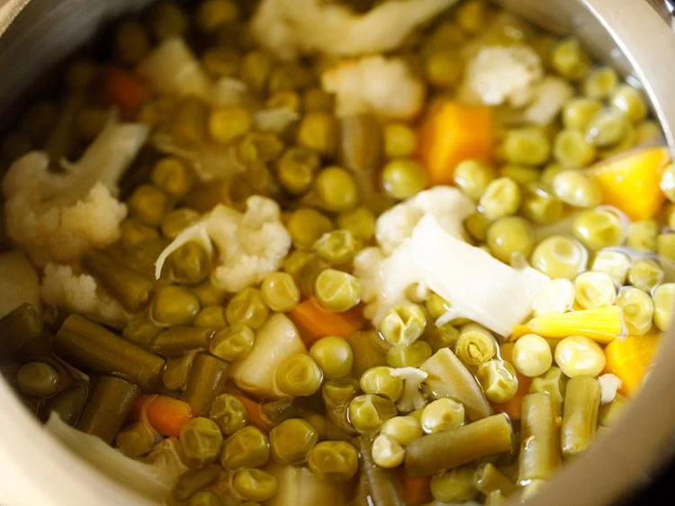
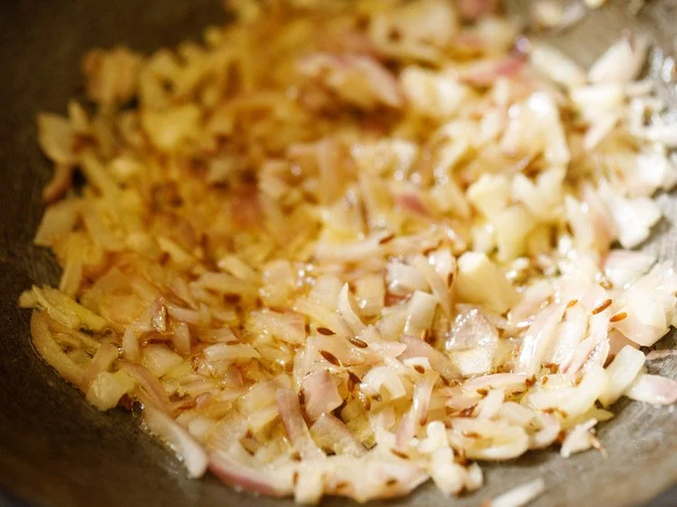
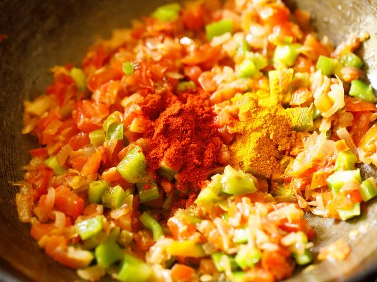
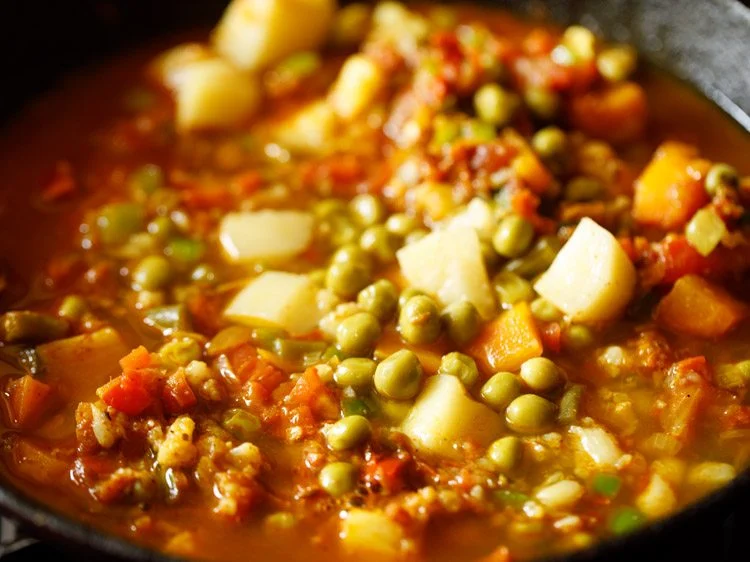
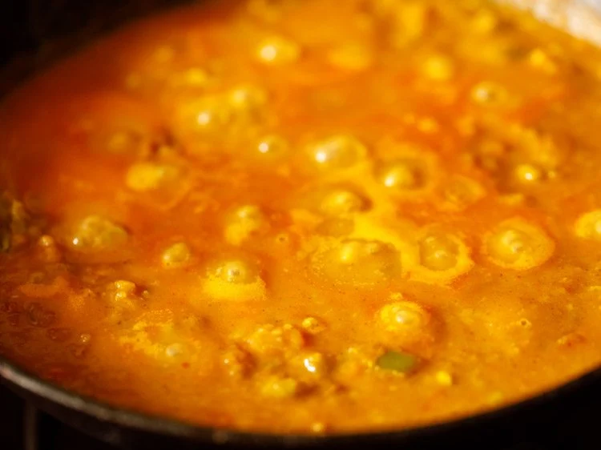
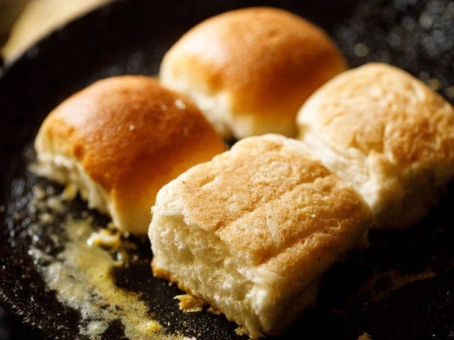
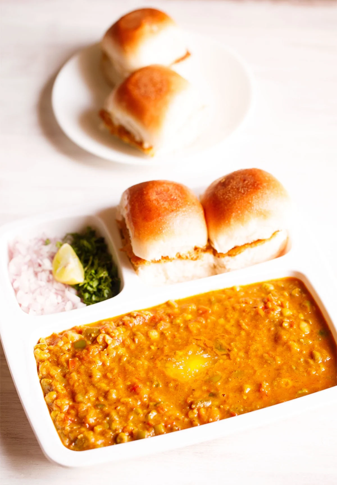

Pav Bhaji Recipe (Vegetable Mash with Soft Buns)
Pav Bhaji is a popular street food from Mumbai, Maharashtra, consisting of a spiced and buttery mashed vegetable curry/gravy (bhaji) made with potatoes, cauliflower, green peas, and other vegetables, served with soft, fluffy dinner rolls or buns (pav) toasted with butter and accompanied by chopped onions, lemon wedges and fresh coriander. Its a hearty, satisfying and delightful meal. Check out my step-by-step picture guide and video of making this delicious street style dish in 2 ways – one, traditionally and two, as a quick Instant Pot recipe.

How to make Pav Bhaji
Cook Vegetables
1. Rinse, peel and chop the veggies. You will need 1 cup chopped cauliflower, 1 cup chopped carrot, 3 medium sized potatoes (chopped) and ⅓ cup chopped french beans.
Cabbage, broccoli, zucchini, pumpkin are some unique options that you can consider to add, but the traditional version does not include these veggies.
2. Add all the above chopped veggies in a 3 litre stovetop pressure cooker. Also add 1 cup green peas (fresh or frozen).
I have cooked the veggies in a pressure cooker. You can boil or steam them using a pan or in the Instant pot adding water as needed.
3. Add 2.25 to 2.5 cups water.
4. Pressure cook the veggies for 5 to 6 whistles or for about 12 minutes on medium heat.
5. When the pressure settles down on its own, open the cooker and check if the veggies are fork tender, softened and cooked well.
You can even steam or cook the veggies in a pan or pot. The vegetables have be to cooked completely and should not be al dente or just about cooked.
Set aside the vegetables with the cooked water (broth/stock) in the cooker itself.
Make Onion Tomato Masala
6. Heat a frying pan or kadai (wok). You can also use a large tawa or a skillet. Add 2 to 3 tablespoons butter. You can use amul butter or any brand of butter. The butter can be salted or unsalted.
7. Let the butter melt.
8. As soon as the butter melts, add 1 teaspoon cumin seeds.
9. Let the cumin seeds crackle and change their color.
10. Then add ½ cup chopped onions.
11. Mix onions with the butter and sauté on a low to medium heat.
12. Sauté until the onions turn translucent.
13. Add 2 teaspoons ginger-garlic paste. You can crush 1.5 inch ginger and 5 to 6 medium garlic cloves, in a mortar-pestle.
14. Mix and sauté for some seconds until the raw aroma of both ginger and garlic goes away.
15. Then add 1 to 2 green chilies (chopped), about 1 teaspoon chopped green chillies.
16. Mix well.
17. Add 2 cups finely chopped tomatoes. Swap canned tomatoes if you do not have fresh tomatoes.
18. Mix very well.
19. Then begin to sauté tomatoes on a low to medium heat.
20. Sauté until the tomatoes become soft, mushy and you see butter releasing from the sides. This takes about 6 to 7 minutes on a low to medium heat.
21. When the tomatoes have softened, add ½ cup finely chopped capsicum (green bell pepper). Sauté for 2 to 3 minutes.
22. Add 1 teaspoon turmeric powder and 1 teaspoon Kashmiri red chilli powder.
Make Vegetable Bhaji
23. Add 2 to 3 tablespoons Pav Bhaji Masala. Depending on how intense is the aroma and flavor of the masala, you can add it in less or more proportions.
Add 2 tablespoons if the masala is strong, intense and flavorful. For a more robust and spiced bhaji add 3 tablespoons of it.
24. Mix very well.
25. Add the cooked veggies. You can choose to mash the veggies before you add them in the pan or skillet.
26. Mix thoroughly.
27. Add all of the stock or water from the pressure cooker in which the veggies were cooked.
28. Combine and mix thoroughly.
29. Season with salt according to your taste preferences and give a mix.
30. With a potato masher, begin to carefully mash the veggies directly in the pan.
31. You can mash the veggies less or more according to the consistency you want in tear-shapedFor a smooth mixture mash more. For a chunky bhaji, mash less. Add more water if the bhaji looks thick. bhaji.
32. Keep on stirring occasionally and let the mashed vegetable gravy simmer for 8 to 10 minutes on a low heat.
33. If the bhaji looks dry and then add some water. The consistency is neither very thick nor thin.
34. Do stir often so that the bhaji does not stick to the pan. When the bhaji simmers to the desired consistency, check the taste.
Add salt, pav bhaji masala, red chili powder or butter if needed.
Pan Fry Pav
35. When the bhaji is simmering, you can pan fry the bread rolls so that you serve the pav with steaming hot bhaji. Cut through the bread roll from the center so that you get two equal halves.
36. Heat a tawa or skillet or a shallow frying pan. Keep the heat to a low and then add 1 to 2 tablespoons butter or more if you like.
37. When the butter begins to melt, add 1 teaspoon of pav bhaji masala (for 2 to 3 pav). You can skip the masala if you prefer.
38. Mix the masala very well with a spoon or spatula ensuring it does not burn.
39. Then place the pav on the butter.
40. Press with a spatula and rotate the pav all over the melted butter so that the pav absorbs the butter together with the ground spices.
41. Now turn over the pav. Press gently with a spatula and rotate them on the tawa so that the second side absorbs the butter.
Add more butter if needed. You can turn over and toast them more if required. Then transfer the lightly pan fried bread rolls in a plate and set aside. This way fry the rolls in two to three batches.
42. Serve piping hot Bhaji topped with a bit of butter paired with the lightly toasted pav and a side of finely chopped onions, coriander leaves and lemon wedges.
